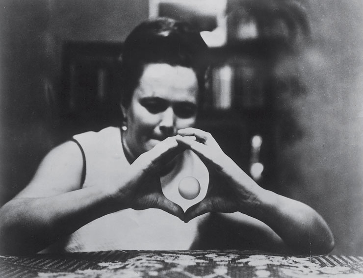

<!DOCTYPE html>
<html>
  <head>
    <meta charset="utf-8"/>
    <title>Psi Coin Flip Manipulation</title>
    <script src="jsPsych/jspsych.js"></script>
    <script src="jsPsych/plugins/jspsych-image-button-response.js"></script>
    <script src="jsPsych/plugins/jspsych-html-button-response.js"></script>
    <script src="jsPsych/plugins/jspsych-image-keyboard-response.js"></script>
    <link href="jsPsych/css/jspsych.css" rel="stylesheet" type="text/css"></link>
  </head>
  <body>
  </body>
  <script>
    var timeline = [];

    var welcome = {
      type: 'html-button-response',
      stimulus: '</img><p><strong>Federal Bureau of Investigations</strong><br><strong>Unusual Incidents Unit</strong><br>Welcome to the Coin Flip Manipulation Experiment.<br>In this experiment you will attempt to guess whether a random coin toss will land on head or tails<br> to see if the result can be influenced by your intentions.</p>',
      choices: ['Continue']
    };
    timeline.push(welcome);

    var instructions = {
      type: 'html-button-response',
      stimulus: '<p>You will have the option to choose between head and tails.<br>You will then be given 1 second to concentrate on your choice.<br>Then, a random coin toss will be thrown, and the result will be compared to your choice.<br>This will repeat 5 times.</p>',
      choices: ['Begin']
    };
    timeline.push(instructions);

    // Heads: 0, Tails: 1
    var chosenSide;

    // actual side generated
    var thrownSide;

    var coin_flip = {
      type: 'image-button-response',
      stimulus: 'images/spinningquarter.gif',
      prompt: 'Heads or tails?',
      choices: ['Heads', 'Tails'],
      data: {test_part: 'coin_choose'}
    };
    // 1.5 second time to focus on chosen side with 1 second gap
    var focus_on_side = {
      type: 'image-keyboard-response',
      stimulus: 'images/quarter_heads.jpg',
      choices: jsPsych.NO_KEYS,
      trial_duration: 1500,
      prompt: 'BOTTOM TEXT', 
      data: {test_part: 'focus'},
      post_trial_gap: 1000,
      on_start: function(focus_on_side) {
        // gets the value of the last trial's button_pressed object
        chosenSide = jsPsych.data.get().last(1).select('button_pressed').values;
        if (chosenSide == '0'){
          focus_on_side.prompt = '<br>Concentrate on the heads';
          focus_on_side.stimulus = 'images/quarter_heads.jpg';
        }
        else {
          focus_on_side.prompt = '<br>Concentrate on the tails';
          focus_on_side.stimulus = 'images/quarter_tails.jpg';
        }
      }
    };
    // generates random number to form coin and checks if same as chosen
    var check_coin = {
      type: 'image-keyboard-response',
      stimulus: 'images/quarter_heads.jpg',
      choices: jsPsych.NO_KEYS,
      trial_duration: 2000,
      prompt: 'BOTTOM TEXT',
      data: {test_part: 'check_coin'} ,
      on_start: function(check_coin) {
        thrownSide = Math.round(Math.random());
        // 0-0.5 being heads
        if (thrownSide == 0) {
          check_coin.stimulus = 'images/quarter_heads.jpg';
          check_coin.prompt = "<br>It's heads!";
        } else {
          check_coin.stimulus = 'images/quarter_tails.jpg';
          check_coin.prompt = "<br>It's tails!";
        }
      },
      on_finish: function(data){
        if (thrownSide == chosenSide) {
          data.correct = true;
        } else {
          data.correct = false;
        }
      }
    };

    // repeats trials 10 times
    var test_procedure = {
      timeline: [coin_flip, focus_on_side, check_coin],
      repetitions: 5,
    };
    timeline.push(test_procedure);

    // debriefs results
    var debrief = {
      type: 'html-button-response',
      choices: ['Finish'],
      stimulus: function() {
        var trials = jsPsych.data.get().filter({test_part: 'check_coin'});
        var correct = trials.filter({correct: true});
        var accuracy = Math.round(correct.count() / trials.count() * 100);
        
        var rating; 
        if (accuracy >= 70) {
          rating = 'We may be onto something here...';
        } else if (accuracy > 40 & accuracy < 70) {
          rating = "Doesn't seem like anything out of the ordinary...";
        } else {
          rating = "Maybe there's an opposite effect..."
        }

        return `<p></img><br>You guessed ${correct.count()} coin tosses correctly, giving you a ${accuracy}% accuracy.<br> ${rating}`
      }
    };
    timeline.push(debrief);

    jsPsych.init({
      timeline: timeline,
      on_finish: function(){
        jsPsych.data.displayData();
      }
    });
  </script>
</html>


